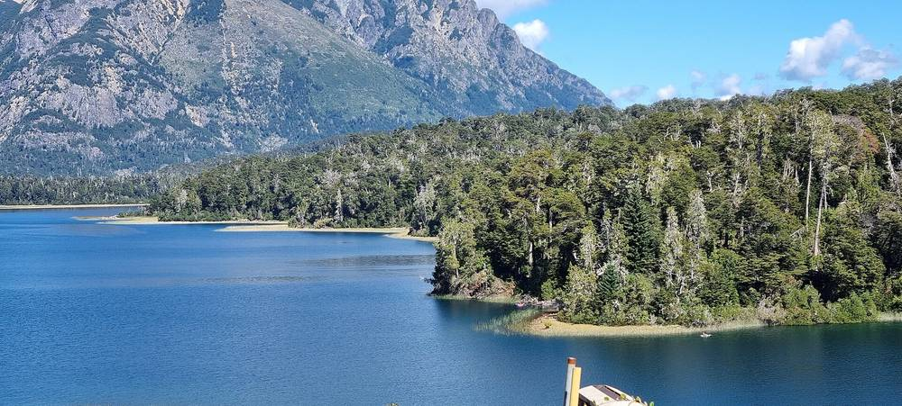

아르헨티나 바릴로체 전기협동조합, 16ha에 14MW 태양광단지 추진…성수기 수요 72MW인데 외부 송전은 약 60MW

배전만 하던 조합이 발전·배터리 저장까지 넓혀 외부 의존 줄이기로…외부 투자로 짓고 조합이 운영, 전기 팔아 투자금 회수, 같은 규모 2단지도 구상
아르헨티나 리오네그로주 바릴로체의 배전을 맡아 온 바릴로체 전기협동조합(CEB)이 시 안에 1단계 14MW 규모의 태양광단지를 세우는 사업을 추진한다. 부지는 바릴로체 산업기술단지(PITBA) 인근 약 16ha로, 조합은 땅 사용 문제를 리오네그로 주정부와 협의하고 있다. 알레한드로 포사스(Alejandro Pozas) 이사장에 따르면 바릴로체는 지금 송전선 ALIPIBA I을 통해 약 60MW를 받는데, 관광객이 몰리는 성수기에는 수요가 약 72MW까지 올라 매달 예비 전력을 빌려야 하고 이를 실제로 돌리는 성수기에는 달러로 값을 치른다. 사업비는 외부 투자로 마련하고 운영·관리는 조합이 맡으며, 투자금은 전기를 팔아 차례로 갚는 구조이고 조합은 이미 패널 구매에 돈을 쓰기 시작했다. 조합은 배터리 저장 단지도 함께 추진하고, 첫 단지가 끝나면 같은 규모의 두 번째 단지도 만들 계획이다. 포사스 이사장은 사업이 상당히 진척됐다며 2~3개월 안에 구체적인 결과를 내고 싶다고 했고, "바릴로체는 밖에서 답을 기다릴 수만은 없다"고 말했다.
시민에너지 관점
성수기 수요 72MW에 외부 송전이 약 60MW뿐인 도시에서, 주민이 주인인 전기협동조합이 그 빈틈을 스스로 메우겠다고 나선 것이다. 협동조합이 발전소까지 맡기엔 자본과 기술이 부족하다는 걱정이 나올 수 있지만, 미국에서 1936년 농촌전기화법 이후 민간 전력회사가 외면한 농촌 마을들이 협동조합으로 스스로 전기를 끌어온 것처럼 지역 전력은 오래전부터 공동체가 맡아 온 일이다. 배전망을 가진 조합이 발전과 저장까지 쥐면 성수기마다 달러로 빠져나가던 돈이 지역 안에서 돌고, 그 이익은 조합원인 주민에게 돌아갈 수 있다. 외부 투자에 기대는 이번 구조가 소유권까지 넘기지 않도록 조합 지분과 주민 참여 몫을 처음부터 정해 두는 것이 다음 숙제다.
출처: Bache3000 2026-11-04 Diego Llorente 원문 보기
창간 전 시험 발행 기사입니다.
アルゼンチン・バリローチェ電力協同組合、16haに14MWの太陽光発電所を計画…繁忙期の需要72MWに対し外部送電は約60MW
配電だけを担ってきた組合が発電・蓄電池まで広げ外部依存を減らす方針…外部投資で建設し組合が運営、売電で投資を回収、同規模の第2発電所も構想
アルゼンチン・リオネグロ州バリローチェの配電を担ってきたバリローチェ電力協同組合（CEB）が、市内に第1期14MW規模の太陽光発電所を建設する事業を進めている。用地はバリローチェ産業技術団地（PITBA）近くの約16haで、組合は土地の利用についてリオネグロ州政府と協議している。アレハンドロ・ポサス（Alejandro Pozas）理事長によると、バリローチェは現在、送電線ALIPIBA Iを通じて約60MWを受けているが、観光客が集まる繁忙期には需要が約72MWまで上がるため、毎月予備電力を借りる必要があり、それを実際に動かす繁忙期にはドルで代金を支払っている。事業費は外部投資でまかない、運営・管理は組合が担い、投資は売電で順次回収する仕組みで、組合はすでにパネル購入に資金を投じ始めている。組合は蓄電池施設も並行して進め、最初の発電所が完成すれば同規模の2カ所目もつくる計画だ。ポサス理事長は事業がかなり進んでいるとして2〜3カ月以内に具体的な成果を出したいと述べ、「バリローチェは外から答えが来るのを待ってばかりはいられない」と語った。
市民エネルギーの視点
繁忙期の需要72MWに対し外部送電が約60MWしかない都市で、住民が主人である電力協同組合がその隙間を自ら埋めようと乗り出した。協同組合が発電所まで担うには資本も技術も足りないという懸念もありうるが、米国では1936年の農村電化法以降、民間電力会社に見放された農村が協同組合で自ら電気を引いてきたように、地域の電力は昔から共同体が担ってきた仕事だ。配電網を持つ組合が発電と蓄電まで手にすれば、繁忙期のたびにドルで流れ出ていたお金が地域の中で回り、その利益は組合員である住民に返ってくる。外部投資に頼る今回の仕組みが所有権まで手放すことにならないよう、組合の持ち分と住民参加の枠を最初から決めておくことが次の課題だ。
出典: Bache3000 2026-11-04 Diego Llorente 原文を読む
創刊前の試験発行記事です。
阿根廷巴里洛切电力合作社计划在16公顷土地上建设14MW光伏电站，旺季需求72MW而外部输电仅约60MW
原本只负责配电的合作社将业务扩展到发电和电池储能以减少对外依赖，由外部投资建设、合作社运营、靠售电回收投资，并设想建设同等规模的第二座电站
一直负责阿根廷里奥内格罗省巴里洛切配电业务的巴里洛切电力合作社（CEB）正在推进在市内建设一期14MW光伏电站的项目。选址位于巴里洛切工业技术园区（PITBA）附近约16公顷的土地，合作社正就土地使用问题与里奥内格罗省政府协商。据理事长阿莱汉德罗·波萨斯（Alejandro Pozas）介绍，巴里洛切目前通过ALIPIBA I输电线路获得约60MW电力，但游客集中的旺季需求升至约72MW，因此每月都要租用备用电力，旺季实际启用时还要以美元付费。项目资金由外部投资解决，合作社负责运营和管理，投资通过售电逐步收回，合作社已开始投入资金采购光伏板。合作社还同步推进电池储能设施，并计划在第一座电站建成后再建一座同等规模的电站。波萨斯表示项目已进展到相当阶段，希望在两三个月内拿出具体成果，并说"巴里洛切不能只等着外面给出答案"。
市民能源视角
在一个旺季需求72MW、外部输电却只有约60MW的城市，由居民当家的电力合作社决定自己填补这一缺口。有人可能担心合作社没有足够的资本和技术来经营电站，但正如美国1936年《农村电气化法》之后，被民营电力公司忽视的农村通过合作社自己把电接进村里一样，地方电力自古就是社区承担的事业。拥有配电网的合作社一旦把发电和储能也握在手中，每到旺季以美元流出的资金就会留在当地循环，收益也能回到身为社员的居民手中。为了不让这次依赖外部投资的结构连所有权也一并让出，从一开始就明确合作社持股和居民参与份额，是下一步的课题。
来源: Bache3000 2026-11-04 Diego Llorente 查看原文
本文为创刊前试发行文章。
Bariloche electricity cooperative in Argentina plans 14 MW solar park on 16 hectares as peak-season demand of 72 MW outstrips about 60 MW of outside supply
A co-op that has only distributed power moves into generation and battery storage to cut outside dependence; outside investors would fund construction, the co-op would run it and repay them from power sales, with a second park of the same size in view
The Cooperativa de Electricidad Bariloche (CEB), which distributes electricity in Bariloche in Argentina's Río Negro province, is pursuing a plan to build a solar park inside the city with a first phase of 14 MW. The site is about 16 hectares near the Bariloche Industrial and Technological Park (PITBA), and the cooperative is negotiating use of the land with the Río Negro provincial government. According to its president, Alejandro Pozas, Bariloche currently receives about 60 MW through the ALIPIBA I transmission line, but demand climbs to about 72 MW in the tourist high season, so the city has to rent reserve power every month and pays in dollars when that reserve is switched on during the peak. Construction would be financed by outside investment while the cooperative manages the park, with the investment recovered gradually through electricity sales, and the cooperative has already begun spending on panels. It is also working on a battery storage facility and plans a second park of the same size once the first is finished. Pozas said the project is well advanced and that he hopes to have concrete results within two to three months, adding that "Bariloche cannot keep waiting for answers from outside."
Citizen Energy View
In a city where peak demand reaches 72 MW but outside supply is only about 60 MW, a power cooperative owned by its members has stepped up to close the gap itself. Some may worry that a cooperative lacks the capital and expertise to run power plants, but just as rural communities in the United States, passed over by private utilities, brought electricity to themselves through cooperatives after the Rural Electrification Act of 1936, local power has long been work that communities take on. Once a cooperative that owns the distribution network also controls generation and storage, money that used to leave in dollars every peak season can circulate locally, and the returns can go back to residents as members. The next task is to fix the cooperative's equity and a share for residents from the outset, so that relying on outside investment does not also mean giving away ownership.
Source: Bache3000 2026-11-04 Diego Llorente Read the original
This article was published during the trial period before launch.